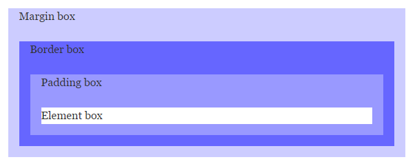

Свойство margin задает поля (внешние отступы элемента) — отступы от внешней границы элемента до гра-ниц родительского элемента или до соседних элементов (рис. 1). 
Рисунок 1 – Блочная модель
Строчные элементы реагируют только на горизонтальные отступы.